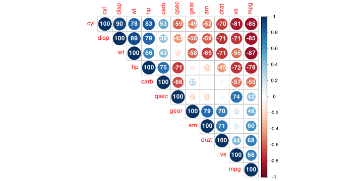
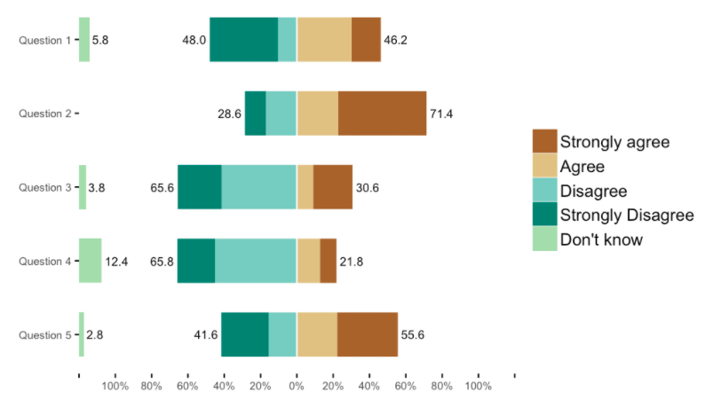

Next Steps
CS&SS 508 • Lecture 11
15 December 2023
Victoria Sass
Roadmap
We’ve learned SO MUCH in this class:
Today, we’ll look at some of the ways you can extend your learning beyond the scope of this introductory course.
- Version control with Git/GitHub
- Tidy Modeling
- Even more visualizations
- Working with geospatial data
- Analyzing text data
- Writing theses/dissertations
- Creating slides for presentations (like this one!)
- Creating a website
Topics for Today
Working with Model Results
- Tidy model output with
broom - Visualizing models with
ggeffects - Tables with
gt,modelsummary, andgtsummary
Reproducible Research
Best Practices
- Organization
- Portability
- Version Control
Wrapping up the course
Working with Model Results
broom
broom is a package that “tidies up” the output from models such a lm() and glm().
It has a small number of key functions:
-
tidy()- Creates a dataframe summary of a model. -
augment()- Adds columns—such as fitted values—to the data used in the model. -
glance()- Provides one row of fit statistics for models.
Model Output is a List
lm() and summary() produce lists as output, which cannot go directly into tidyverse functions, particularly those in ggplot2.
Call:
lm(formula = yn ~ num1 + fac1, data = ex_dat)
Residuals:
Min 1Q Median 3Q Max
-7.580 -2.077 0.259 1.981 6.967
Coefficients:
Estimate Std. Error t value Pr(>|t|)
(Intercept) 1.1987 0.3803 3.152 0.00187 **
num1 0.6335 0.1129 5.609 6.85e-08 ***
fac1B 0.9209 0.4924 1.870 0.06297 .
fac1C 1.5672 0.5306 2.954 0.00353 **
---
Signif. codes: 0 '***' 0.001 '**' 0.01 '*' 0.05 '.' 0.1 ' ' 1
Residual standard error: 2.91 on 196 degrees of freedom
Multiple R-squared: 0.1599, Adjusted R-squared: 0.1471
F-statistic: 12.44 on 3 and 196 DF, p-value: 1.761e-07
....Model Output Varies!
Each type of model also produces somewhat different output, so you can’t just reuse the same code to handle output from every model.
Call:
glm(formula = yb ~ num1 + fac1, family = binomial(link = "logit"),
data = ex_dat)
Coefficients:
Estimate Std. Error z value Pr(>|z|)
(Intercept) -0.35422 0.27145 -1.305 0.191922
num1 0.29497 0.08603 3.429 0.000606 ***
fac1B 0.34270 0.35176 0.974 0.329934
fac1C 0.58759 0.37999 1.546 0.122025
---
Signif. codes: 0 '***' 0.001 '**' 0.01 '*' 0.05 '.' 0.1 ' ' 1
(Dispersion parameter for binomial family taken to be 1)
Null deviance: 275.64 on 199 degrees of freedom
Residual deviance: 261.33 on 196 degrees of freedom
AIC: 269.33
....broom::tidy()
tidy() produces similar output, but as a dataframe.
# A tibble: 4 × 5
term estimate std.error statistic p.value
<chr> <dbl> <dbl> <dbl> <dbl>
1 (Intercept) 1.20 0.380 3.15 0.00187
2 num1 0.634 0.113 5.61 0.0000000685
3 fac1B 0.921 0.492 1.87 0.0630
4 fac1C 1.57 0.531 2.95 0.00353 Each type of model (e.g. glm, lmer) has a different method with its own additional arguments. See ?tidy.lm for an example.
broom::tidy()
This output is also completely identical between different models.
This can be very useful and important if running models with different test statistics… or just running a lot of models!
broom::glance()
glance() produces dataframes of fit statistics for models.
If you run many models, you can compare each model row-by-row in each column… or even plot their different fit statistics to allow holistic comparison.
broom::augment()
augment() takes values generated by a model and adds them back to the original data. This includes fitted values, residuals, and leverage statistics.
# A tibble: 6 × 9
yn num1 fac1 .fitted .resid .hat .sigma .cooksd .std.resid
<dbl> <dbl> <fct> <dbl> <dbl> <dbl> <dbl> <dbl> <dbl>
1 -2.19 -0.189 B 2.00 -4.19 0.0155 2.90 0.00828 -1.45
2 2.83 1.52 A 2.16 0.672 0.0161 2.92 0.000221 0.233
3 -1.55 0.129 A 1.28 -2.83 0.0167 2.91 0.00408 -0.979
4 -3.20 -2.82 C 0.979 -4.18 0.0317 2.90 0.0175 -1.46
5 -0.448 -0.260 C 2.60 -3.05 0.0174 2.91 0.00496 -1.06
6 1.78 1.14 A 1.92 -0.146 0.0157 2.92 0.0000102 -0.0506See ?augment.lm for examples of what augment() can do.
The Power of broom
The real advantage of broom becomes apparent when running many models at once. Here we run separate models for each level of fac1:
ex_dat %>%
nest_by(fac1) %>% #<<
mutate(model = list(lm(yn ~ num1 + fac2, data = data))) %>%
summarize(tidy(model), .groups = "drop")# A tibble: 9 × 6
fac1 term estimate std.error statistic p.value
<fct> <chr> <dbl> <dbl> <dbl> <dbl>
1 A (Intercept) 0.595 0.489 1.22 0.228
2 A num1 0.812 0.211 3.85 0.000286
3 A fac2No 1.05 0.739 1.43 0.159
4 B (Intercept) 1.57 0.641 2.46 0.0163
5 B num1 0.464 0.182 2.55 0.0128
6 B fac2No 1.17 0.757 1.55 0.126
7 C (Intercept) 2.23 0.412 5.41 0.00000136
8 C num1 0.654 0.191 3.43 0.00112
9 C fac2No 1.20 0.636 1.89 0.0642 Plotting Model Results
geom_smooth()
I have used geom_smooth() in many past examples.
geom_smooth() generates “smoothed conditional means” including loess curves and generalized additive models (GAMs).
Note, however, that most regression models are conditional mean models, such as ordinary least squares and generalized linear models.
Default geom_smooth()
By default, geom_smooth() chooses either a loess smoother (N < 1000) or a GAM depending on the number of observations.
Linear glm
We could also fit a standard linear model using either method = "glm" or method = "lm" and a formula like y ~ x.
Polynomial glm
poly(x, 2) produces a quadratic model which contains a linear term (x) and a quadratic term (x^2).
More Complex Models
What if we want something more complex than a bivariate model?
What if we have a statistically complex model, like nonlinear probability model or multilevel model?
We need to go beyond geom_smooth()!
But first, vocab!
We are often interested in what might happen if some variables take particular values, often ones not seen in the actual data.
When we set variables to certain values, we refer to them as counterfactual values or just counterfactuals.
For example, if we know nothing about a new observation, our prediction for that estimate is often based on assuming every variable is at its mean.
Sometimes, however, we might have very specific questions which require setting (possibly many) combinations of variables to particular values and making an estimate or prediction.
Providing specific estimates, conditional on values of covariates, is a nice way to summarize results, particularly for models with unintuitive parameters (e.g. logit models).
ggeffects
ggeffects
If we want to look at more complex models, we can use ggeffects to create and plot tidy marginal effects.
That is, tidy dataframes of ranges of predicted values that can be fed straight into ggplot2 for plotting model results.
We will focus on two ggeffects functions:
-
ggpredict()- Computes predicted values for the outcome variable at margins of specific variables. -
plot.ggeffects()- A plot method forggeffectsobjects (likeggpredict()output)
Quick Simulated Data
To best show off ggeffects, I need a data frame with numeric and categorical variables with strong relationships. It is easiest to just simulate it:
ex_dat <- data.frame(num1 = rnorm(200, 1, 2),
fac1 = sample(c(1, 2, 3), 200, TRUE),
num2 = rnorm(200, 0, 3),
fac2 = sample(c(1, 2))) %>%
mutate(yn = num1 * 0.5 + fac1 * 1.1 + num2 * 0.7 +
fac2 - 1.5 + rnorm(200, 0, 2)) %>%
mutate(yb = as.numeric(yn > mean(yn))) %>%
mutate(fac1 = factor(fac1, labels = c("A", "B", "C")),
fac2 = factor(fac2, labels = c("Yes", "No")))
glimpse(ex_dat)Rows: 200
Columns: 6
$ num1 <dbl> -0.2412843, 3.0198857, -1.7444404, 1.6478446, -0.6613235, 1.97802…
$ fac1 <fct> A, C, A, A, A, B, C, B, A, C, A, A, B, B, C, B, B, A, A, B, C, B,…
$ num2 <dbl> 3.19094580, -1.54205858, -0.63284705, 3.93564842, 2.38839013, -5.…
$ fac2 <fct> No, Yes, No, Yes, No, Yes, No, Yes, No, Yes, No, Yes, No, Yes, No…
$ yn <dbl> 4.276335557, 3.070201356, 3.750839566, 3.954848525, 2.197367467, …
$ yb <dbl> 1, 0, 1, 1, 0, 0, 1, 1, 0, 1, 1, 1, 1, 0, 0, 0, 0, 0, 1, 0, 0, 0,…Now we can get ggpredicting!
ggpredict()
When you run ggpredict(), it produces a dataframe with a row for every unique value of a supplied predictor (“independent”) variable (term).
Each row contains an expected (estimated) value for the outcome (“dependent”) variable, plus confidence intervals.
If desired, the argument interval = "prediction" will give predicted intervals instead.
ggpredict() output
plot() for ggpredict()
ggeffects features a plot() method, plot.ggeffects(), which produces a ggplot when you give plot() output from ggpredict().
Grouping with ggpredict()
When using a vector of terms, ggeffects will plot the first along the x-axis and use others for grouping. Note we can pipe a model into ggpredict()!
Faceting with ggpredict()
You can add facet = TRUE to the plot() call to facet over grouping terms.
Counterfactual Values
You can add values in square brackets in the terms = argument to specify counterfactual values.
Representative Values
You can also use [meansd] or [minmax] to set representative values.
Dot plots with ggpredict()
ggpredict will produce dot plots with error bars for categorical predictors.
Notes on ggeffects
There is a lot more to the ggeffects package that you can see in the package vignette and the github repository. This includes, but is not limited to:
- Predicted values for polynomial and interaction terms
- Getting predictions from models from dozens of other packages
- Sending
ggeffectsobjects toggplot2to freely modify plots
Making Tables
pander Regression Tables
We’ve used pander to create nice tables for dataframes. But pander has methods to handle all sort of objects that you might want displayed nicely.
This includes model output, such as from lm(), glm(), and summary().
pander() and lm()
You can send an lm() object straight to pander:
| Estimate | Std. Error | t value | Pr(> | |
|---|---|---|---|---|
| (Intercept) | 1.003 | 0.3866 | 2.594 | 0.01019 |
| num1 | 0.6407 | 0.1047 | 6.118 | 5.06e-09 |
| fac1B | 1.675 | 0.5341 | 3.137 | 0.001972 |
| fac1C | 2.16 | 0.5349 | 4.038 | 7.719e-05 |
pander() and summary()
You can do this with summary() as well, for added information:
| Estimate | Std. Error | t value | Pr(> | |
|---|---|---|---|---|
| (Intercept) | 1.003 | 0.3866 | 2.594 | 0.01019 |
| num1 | 0.6407 | 0.1047 | 6.118 | 5.06e-09 |
| fac1B | 1.675 | 0.5341 | 3.137 | 0.001972 |
| fac1C | 2.16 | 0.5349 | 4.038 | 7.719e-05 |
| Observations | Residual Std. Error | \(R^2\) | Adjusted \(R^2\) |
|---|---|---|---|
| 200 | 3.093 | 0.2126 | 0.2005 |
Advanced Tables
pander tables are great for basic rmarkdown documents, but they’re not generally publication ready.
We’re going to talk about a few different approaches for making nicer tables:
gtfrom RStudio for general table constructionmodelsummaryfor creating model tablesgtsummaryfor creating data summaries
gt
If you need to more customizability or different output types, RStudio’s gt package is a new and powerful system for creating tables from dataframes. We’ll use dplyr’s built-in starwars data for some examples.
library(gt)
tes_chars <- starwars %>%
unnest(films) %>%
unnest(starships, keep_empty = TRUE) %>%
filter(films == "The Empire Strikes Back") %>%
select(name, species, starships, mass, height) %>%
distinct(name, .keep_all = TRUE) %>%
mutate(starships = ifelse(name == "Obi-Wan Kenobi" | is.na(starships),
"No Ship", starships))
glimpse(tes_chars)Rows: 16
Columns: 5
$ name <chr> "Luke Skywalker", "C-3PO", "R2-D2", "Darth Vader", "Leia Org…
$ species <chr> "Human", "Droid", "Droid", "Human", "Human", "Human", "Wooki…
$ starships <chr> "X-wing", "No Ship", "No Ship", "TIE Advanced x1", "No Ship"…
$ mass <dbl> 77.0, 75.0, 32.0, 136.0, 49.0, 77.0, 112.0, 80.0, 77.0, 17.0…
$ height <int> 172, 167, 96, 202, 150, 182, 228, 180, 170, 66, 170, 183, 20…Initialize
| name | species | starships | mass | height |
|---|---|---|---|---|
| Luke Skywalker | Human | X-wing | 77.0 | 172 |
| C-3PO | Droid | No Ship | 75.0 | 167 |
| R2-D2 | Droid | No Ship | 32.0 | 96 |
| Darth Vader | Human | TIE Advanced x1 | 136.0 | 202 |
| Leia Organa | Human | No Ship | 49.0 | 150 |
| Obi-Wan Kenobi | Human | No Ship | 77.0 | 182 |
| Chewbacca | Wookiee | Millennium Falcon | 112.0 | 228 |
| Han Solo | Human | Millennium Falcon | 80.0 | 180 |
| Wedge Antilles | Human | X-wing | 77.0 | 170 |
| Yoda | Yoda's species | No Ship | 17.0 | 66 |
| Palpatine | Human | No Ship | 75.0 | 170 |
| Boba Fett | Human | Slave 1 | 78.2 | 183 |
| IG-88 | Droid | No Ship | 140.0 | 200 |
| Bossk | Trandoshan | No Ship | 113.0 | 190 |
| Lando Calrissian | Human | Millennium Falcon | 79.0 | 177 |
| Lobot | Human | No Ship | 79.0 | 175 |
Grouping
If we group_by() first, the levels of the grouping variable become grouping rows in the table.
| name | species | mass | height |
|---|---|---|---|
| X-wing | |||
| Luke Skywalker | Human | 77.0 | 172 |
| Wedge Antilles | Human | 77.0 | 170 |
| No Ship | |||
| C-3PO | Droid | 75.0 | 167 |
| R2-D2 | Droid | 32.0 | 96 |
| Leia Organa | Human | 49.0 | 150 |
| Obi-Wan Kenobi | Human | 77.0 | 182 |
| Yoda | Yoda's species | 17.0 | 66 |
| Palpatine | Human | 75.0 | 170 |
| IG-88 | Droid | 140.0 | 200 |
| Bossk | Trandoshan | 113.0 | 190 |
| Lobot | Human | 79.0 | 175 |
| TIE Advanced x1 | |||
| Darth Vader | Human | 136.0 | 202 |
| Millennium Falcon | |||
| Chewbacca | Wookiee | 112.0 | 228 |
| Han Solo | Human | 80.0 | 180 |
| Lando Calrissian | Human | 79.0 | 177 |
| Slave 1 | |||
| Boba Fett | Human | 78.2 | 183 |
Rownames
Designating a rowname_col removes that column’s name and divides the values from the measures to the right.
| species | mass | height | |
|---|---|---|---|
| X-wing | |||
| Luke Skywalker | Human | 77.0 | 172 |
| Wedge Antilles | Human | 77.0 | 170 |
| No Ship | |||
| C-3PO | Droid | 75.0 | 167 |
| R2-D2 | Droid | 32.0 | 96 |
| Leia Organa | Human | 49.0 | 150 |
| Obi-Wan Kenobi | Human | 77.0 | 182 |
| Yoda | Yoda's species | 17.0 | 66 |
| Palpatine | Human | 75.0 | 170 |
| IG-88 | Droid | 140.0 | 200 |
| Bossk | Trandoshan | 113.0 | 190 |
| Lobot | Human | 79.0 | 175 |
| TIE Advanced x1 | |||
| Darth Vader | Human | 136.0 | 202 |
| Millennium Falcon | |||
| Chewbacca | Wookiee | 112.0 | 228 |
| Han Solo | Human | 80.0 | 180 |
| Lando Calrissian | Human | 79.0 | 177 |
| Slave 1 | |||
| Boba Fett | Human | 78.2 | 183 |
Header
tab_header() can add titles and subtitles.
| Star Wars Characters | |||
| The Empire Strikes Back | |||
| species | mass | height | |
|---|---|---|---|
| X-wing | |||
| Luke Skywalker | Human | 77.0 | 172 |
| Wedge Antilles | Human | 77.0 | 170 |
| No Ship | |||
| C-3PO | Droid | 75.0 | 167 |
| R2-D2 | Droid | 32.0 | 96 |
| Leia Organa | Human | 49.0 | 150 |
| Obi-Wan Kenobi | Human | 77.0 | 182 |
| Yoda | Yoda's species | 17.0 | 66 |
| Palpatine | Human | 75.0 | 170 |
| IG-88 | Droid | 140.0 | 200 |
| Bossk | Trandoshan | 113.0 | 190 |
| Lobot | Human | 79.0 | 175 |
| TIE Advanced x1 | |||
| Darth Vader | Human | 136.0 | 202 |
| Millennium Falcon | |||
| Chewbacca | Wookiee | 112.0 | 228 |
| Han Solo | Human | 80.0 | 180 |
| Lando Calrissian | Human | 79.0 | 177 |
| Slave 1 | |||
| Boba Fett | Human | 78.2 | 183 |
Spanner
A tab_spanner() lets us group columns together.
| Star Wars Characters | |||
| The Empire Strikes Back | |||
| species | Vitals | ||
|---|---|---|---|
| mass | height | ||
| X-wing | |||
| Luke Skywalker | Human | 77.0 | 172 |
| Wedge Antilles | Human | 77.0 | 170 |
| No Ship | |||
| C-3PO | Droid | 75.0 | 167 |
| R2-D2 | Droid | 32.0 | 96 |
| Leia Organa | Human | 49.0 | 150 |
| Obi-Wan Kenobi | Human | 77.0 | 182 |
| Yoda | Yoda's species | 17.0 | 66 |
| Palpatine | Human | 75.0 | 170 |
| IG-88 | Droid | 140.0 | 200 |
| Bossk | Trandoshan | 113.0 | 190 |
| Lobot | Human | 79.0 | 175 |
| TIE Advanced x1 | |||
| Darth Vader | Human | 136.0 | 202 |
| Millennium Falcon | |||
| Chewbacca | Wookiee | 112.0 | 228 |
| Han Solo | Human | 80.0 | 180 |
| Lando Calrissian | Human | 79.0 | 177 |
| Slave 1 | |||
| Boba Fett | Human | 78.2 | 183 |
Column Labels
We can directly change column names with cols_label()
| Star Wars Characters | |||
| The Empire Strikes Back | |||
| Species | Vitals | ||
|---|---|---|---|
| Mass (kg) | Height (cm) | ||
| X-wing | |||
| Luke Skywalker | Human | 77.0 | 172 |
| Wedge Antilles | Human | 77.0 | 170 |
| No Ship | |||
| C-3PO | Droid | 75.0 | 167 |
| R2-D2 | Droid | 32.0 | 96 |
| Leia Organa | Human | 49.0 | 150 |
| Obi-Wan Kenobi | Human | 77.0 | 182 |
| Yoda | Yoda's species | 17.0 | 66 |
| Palpatine | Human | 75.0 | 170 |
| IG-88 | Droid | 140.0 | 200 |
| Bossk | Trandoshan | 113.0 | 190 |
| Lobot | Human | 79.0 | 175 |
| TIE Advanced x1 | |||
| Darth Vader | Human | 136.0 | 202 |
| Millennium Falcon | |||
| Chewbacca | Wookiee | 112.0 | 228 |
| Han Solo | Human | 80.0 | 180 |
| Lando Calrissian | Human | 79.0 | 177 |
| Slave 1 | |||
| Boba Fett | Human | 78.2 | 183 |
Number Format
tes_chars %>%
group_by(starships) %>%
gt(rowname_col = "name") %>%
tab_header(
title = "Star Wars Characters",
subtitle = "The Empire Strikes Back"
) %>%
tab_spanner(
label = "Vitals",
columns = vars(mass, height)
) %>%
cols_label(
mass = "Mass (kg)",
height = "Height (cm)",
species = "Species"
) %>%
fmt_number(
columns = vars(mass),
decimals = 0) We can adjust cell formats too.
| Star Wars Characters | |||
| The Empire Strikes Back | |||
| Species | Vitals | ||
|---|---|---|---|
| Mass (kg) | Height (cm) | ||
| X-wing | |||
| Luke Skywalker | Human | 77 | 172 |
| Wedge Antilles | Human | 77 | 170 |
| No Ship | |||
| C-3PO | Droid | 75 | 167 |
| R2-D2 | Droid | 32 | 96 |
| Leia Organa | Human | 49 | 150 |
| Obi-Wan Kenobi | Human | 77 | 182 |
| Yoda | Yoda's species | 17 | 66 |
| Palpatine | Human | 75 | 170 |
| IG-88 | Droid | 140 | 200 |
| Bossk | Trandoshan | 113 | 190 |
| Lobot | Human | 79 | 175 |
| TIE Advanced x1 | |||
| Darth Vader | Human | 136 | 202 |
| Millennium Falcon | |||
| Chewbacca | Wookiee | 112 | 228 |
| Han Solo | Human | 80 | 180 |
| Lando Calrissian | Human | 79 | 177 |
| Slave 1 | |||
| Boba Fett | Human | 78 | 183 |
Align Columns
tes_chars %>%
group_by(starships) %>%
gt(rowname_col = "name") %>%
tab_header(
title = "Star Wars Characters",
subtitle = "The Empire Strikes Back"
) %>%
tab_spanner(
label = "Vitals",
columns = vars(mass, height)
) %>%
cols_label(
mass = "Mass (kg)",
height = "Height (cm)",
species = "Species"
) %>%
fmt_number(
columns = vars(mass),
decimals = 0
) %>%
cols_align(
align = "center",
columns = vars(species, mass, height)
)| Star Wars Characters | |||
| The Empire Strikes Back | |||
| Species | Vitals | ||
|---|---|---|---|
| Mass (kg) | Height (cm) | ||
| X-wing | |||
| Luke Skywalker | Human | 77 | 172 |
| Wedge Antilles | Human | 77 | 170 |
| No Ship | |||
| C-3PO | Droid | 75 | 167 |
| R2-D2 | Droid | 32 | 96 |
| Leia Organa | Human | 49 | 150 |
| Obi-Wan Kenobi | Human | 77 | 182 |
| Yoda | Yoda's species | 17 | 66 |
| Palpatine | Human | 75 | 170 |
| IG-88 | Droid | 140 | 200 |
| Bossk | Trandoshan | 113 | 190 |
| Lobot | Human | 79 | 175 |
| TIE Advanced x1 | |||
| Darth Vader | Human | 136 | 202 |
| Millennium Falcon | |||
| Chewbacca | Wookiee | 112 | 228 |
| Han Solo | Human | 80 | 180 |
| Lando Calrissian | Human | 79 | 177 |
| Slave 1 | |||
| Boba Fett | Human | 78 | 183 |
Reorder Groups
tes_chars %>%
group_by(starships) %>%
gt(rowname_col = "name") %>%
tab_header(
title = "Star Wars Characters",
subtitle = "The Empire Strikes Back"
) %>%
tab_spanner(
label = "Vitals",
columns = vars(mass, height)
) %>%
cols_label(
mass = "Mass (kg)",
height = "Height (cm)",
species = "Species"
) %>%
fmt_number(
columns = vars(mass),
decimals = 0
) %>%
cols_align(
align = "center",
columns = vars(species, mass, height)
) %>%
row_group_order(
groups = c("X-wing",
"Millennium Falcon")
)| Star Wars Characters | |||
| The Empire Strikes Back | |||
| Species | Vitals | ||
|---|---|---|---|
| Mass (kg) | Height (cm) | ||
| X-wing | |||
| Luke Skywalker | Human | 77 | 172 |
| Wedge Antilles | Human | 77 | 170 |
| Millennium Falcon | |||
| Chewbacca | Wookiee | 112 | 228 |
| Han Solo | Human | 80 | 180 |
| Lando Calrissian | Human | 79 | 177 |
| No Ship | |||
| C-3PO | Droid | 75 | 167 |
| R2-D2 | Droid | 32 | 96 |
| Leia Organa | Human | 49 | 150 |
| Obi-Wan Kenobi | Human | 77 | 182 |
| Yoda | Yoda's species | 17 | 66 |
| Palpatine | Human | 75 | 170 |
| IG-88 | Droid | 140 | 200 |
| Bossk | Trandoshan | 113 | 190 |
| Lobot | Human | 79 | 175 |
| TIE Advanced x1 | |||
| Darth Vader | Human | 136 | 202 |
| Slave 1 | |||
| Boba Fett | Human | 78 | 183 |
Big Improvement!
| name | species | starships | mass | height |
|---|---|---|---|---|
| Luke Skywalker | Human | X-wing | 77.0 | 172 |
| C-3PO | Droid | No Ship | 75.0 | 167 |
| R2-D2 | Droid | No Ship | 32.0 | 96 |
| Darth Vader | Human | TIE Advanced x1 | 136.0 | 202 |
| Leia Organa | Human | No Ship | 49.0 | 150 |
| Obi-Wan Kenobi | Human | No Ship | 77.0 | 182 |
| Chewbacca | Wookiee | Millennium Falcon | 112.0 | 228 |
| Han Solo | Human | Millennium Falcon | 80.0 | 180 |
| Wedge Antilles | Human | X-wing | 77.0 | 170 |
| Yoda | Yoda's species | No Ship | 17.0 | 66 |
| Palpatine | Human | No Ship | 75.0 | 170 |
| Boba Fett | Human | Slave 1 | 78.2 | 183 |
| IG-88 | Droid | No Ship | 140.0 | 200 |
| Bossk | Trandoshan | No Ship | 113.0 | 190 |
| Lando Calrissian | Human | Millennium Falcon | 79.0 | 177 |
| Lobot | Human | No Ship | 79.0 | 175 |
| Star Wars Characters | |||
| The Empire Strikes Back | |||
| Species | Vitals | ||
|---|---|---|---|
| Mass (kg) | Height (cm) | ||
| X-wing | |||
| Luke Skywalker | Human | 77 | 172 |
| Wedge Antilles | Human | 77 | 170 |
| Millennium Falcon | |||
| Chewbacca | Wookiee | 112 | 228 |
| Han Solo | Human | 80 | 180 |
| Lando Calrissian | Human | 79 | 177 |
| No Ship | |||
| C-3PO | Droid | 75 | 167 |
| R2-D2 | Droid | 32 | 96 |
| Leia Organa | Human | 49 | 150 |
| Obi-Wan Kenobi | Human | 77 | 182 |
| Yoda | Yoda's species | 17 | 66 |
| Palpatine | Human | 75 | 170 |
| IG-88 | Droid | 140 | 200 |
| Bossk | Trandoshan | 113 | 190 |
| Lobot | Human | 79 | 175 |
| TIE Advanced x1 | |||
| Darth Vader | Human | 136 | 202 |
| Slave 1 | |||
| Boba Fett | Human | 78 | 183 |
\(\LaTeX\) Tables
gt is a very new package and is somewhat finicky when used in .pdf documents.
For tables in \(\LaTeX\)—as is needed for .pdf files—I recommend also looking into the kableExtra or flextable packages.
Like gt, kableExtra and flextable allow the construction of complex tables in either HTML or \(\LaTeX\) using additive syntax similar to ggplot2 and dplyr. flextable is also great for Word tables.
If you want to edit \(\LaTeX\) documents, you can do it in R using Sweave documents (.Rnw). Alternatively, you may want to work in a dedicated \(\LaTeX\) editor. I recommend Overleaf for this purpose.
RMarkdown has support for a fair amount of basic \(\LaTeX\) syntax if you aren’t trying to get too fancy!
flextable
This is a table produced by flextable in Word format–including the embedded density images1!
Look into flextable if you’ll be working in Word or want a table package that handles just about every format.

modelsummary
The modelsummary package combines broom, gt, flextable, and kableExtra to produce tabular summaries of almost any model fit in R.
An advantage of this package is that it can produce output in every common format: HTML, Markdown, \(\LaTeX\), raw text, and even images (.png or .jpg).
Its key function is msummary() or modelsummary() which creates summary tables of models.
You can then build on it using gt, flextable, or kableExtra functions, depending on the selected output format.
msummary
Like pander(), msummary() takes a model as an object to make a table.
Note default modelsummary look like pander tables because they use Markdown.
| (1) | |
|---|---|
| (Intercept) | 37.285 |
| (1.878) | |
| wt | −5.344 |
| (0.559) | |
| Num.Obs. | 32 |
| R2 | 0.753 |
| R2 Adj. | 0.745 |
| AIC | 166.0 |
| BIC | 170.4 |
| Log.Lik. | −80.015 |
| RMSE | 2.95 |
msummary
You can present multiple models in msummary using named lists:
This allows you to produce the common (and often bad) journal format where one starts with a nonsensical “naive model” then works up to the “full model” justified by the front end of the paper.
| Model 1 | Model 2 | Model 3 | |
|---|---|---|---|
| (Intercept) | 37.285 | 37.227 | 34.003 |
| (1.878) | (1.599) | (2.643) | |
| wt | −5.344 | −3.878 | −2.879 |
| (0.559) | (0.633) | (0.905) | |
| hp | −0.032 | −0.037 | |
| (0.009) | (0.010) | ||
| factor(am)1 | 2.084 | ||
| (1.376) | |||
| Num.Obs. | 32 | 32 | 32 |
| R2 | 0.753 | 0.827 | 0.840 |
| R2 Adj. | 0.745 | 0.815 | 0.823 |
| AIC | 166.0 | 156.7 | 156.1 |
| BIC | 170.4 | 162.5 | 163.5 |
| Log.Lik. | −80.015 | −74.326 | −73.067 |
| RMSE | 2.95 | 2.47 | 2.37 |
PDF Output
output = "latex" produces kableExtra based output well-suited to PDFs.1
For customization, I recommend referring to modelsummary’s documentation.
Saving a modelsummary
To save a modelsummary object as a file, just provide a path to the output = argument.
Specifying a suffix (e.g., .png or .pdf) will control the output format.
modelsummary and gt
You can select gt output to enable modifying summaries with gt functions.
Note that gt’s support for PDF output is immature–this format is better for HTML or image output.
| Table 1. Linear Models | |||
| DV: Miles per Gallon | |||
| Model 1 | Model 2 | Model 3 | |
|---|---|---|---|
| (Intercept) | 37.285 | 37.227 | 34.003 |
| (1.878) | (1.599) | (2.643) | |
| wt | -5.344 | -3.878 | -2.879 |
| (0.559) | (0.633) | (0.905) | |
| hp | -0.032 | -0.037 | |
| (0.009) | (0.010) | ||
| factor(am)1 | 2.084 | ||
| (1.376) | |||
| Num.Obs. | 32 | 32 | 32 |
| R2 | 0.753 | 0.827 | 0.840 |
| R2 Adj. | 0.745 | 0.815 | 0.823 |
| AIC | 166.0 | 156.7 | 156.1 |
| BIC | 170.4 | 162.5 | 163.5 |
| Log.Lik. | -80.015 | -74.326 | -73.067 |
| RMSE | 2.95 | 2.47 | 2.37 |
gtsummary
The gtsummary package is similar to modelsummary in that it takes advantage of broom, gt, and kableExtra to provide a flexible table-making framework.
While gtsummary can also produce model tables like modelsummary, it also produces descriptive statistic tables for dataframes1.
tbl_summary()
By default, gtsummary tables provide:
- Frequencies for categorical and binary variables
- Quantiles of the form “50% (25%, 75%)” for continuous variables
- Sample size
| Characteristic | N = 321 |
|---|---|
| mpg | 19.2 (15.4, 22.8) |
| cyl | |
| 4 | 11 (34%) |
| 6 | 7 (22%) |
| 8 | 14 (44%) |
| disp | 196 (121, 326) |
| hp | 123 (97, 180) |
| drat | 3.70 (3.08, 3.92) |
| wt | 3.33 (2.58, 3.61) |
| qsec | 17.71 (16.89, 18.90) |
| vs | 14 (44%) |
| am | 13 (41%) |
| 1 Median (IQR); n (%) | |
Grouping
You can provide a by = argument to do grouped descriptives.
| Characteristic | 0, N = 191 | 1, N = 131 |
|---|---|---|
| mpg | 17.3 (15.0, 19.2) | 22.8 (21.0, 30.4) |
| cyl | ||
| 4 | 3 (16%) | 8 (62%) |
| 6 | 4 (21%) | 3 (23%) |
| 8 | 12 (63%) | 2 (15%) |
| disp | 276 (196, 360) | 120 (79, 160) |
| hp | 175 (117, 193) | 109 (66, 113) |
| drat | 3.15 (3.07, 3.70) | 4.08 (3.85, 4.22) |
| wt | 3.52 (3.44, 3.84) | 2.32 (1.94, 2.78) |
| qsec | 17.82 (17.18, 19.17) | 17.02 (16.46, 18.61) |
| vs | 7 (37%) | 7 (54%) |
| 1 Median (IQR); n (%) | ||
Adding gt
If you select gt output, you can dress it up with gt functions.
starts\_with("stat\_") here selects the statistic columns created by tbl_summary().
| Motor Trend Cars | ||
| Descriptive Statistics | ||
| Characteristic | Transmission | |
|---|---|---|
| 0, N = 191 | 1, N = 131 | |
| mpg | 17.3 (15.0, 19.2) | 22.8 (21.0, 30.4) |
| cyl | ||
| 4 | 3 (16%) | 8 (62%) |
| 6 | 4 (21%) | 3 (23%) |
| 8 | 12 (63%) | 2 (15%) |
| disp | 276 (196, 360) | 120 (79, 160) |
| hp | 175 (117, 193) | 109 (66, 113) |
| drat | 3.15 (3.07, 3.70) | 4.08 (3.85, 4.22) |
| wt | 3.52 (3.44, 3.84) | 2.32 (1.94, 2.78) |
| qsec | 17.82 (17.18, 19.17) | 17.02 (16.46, 18.61) |
| vs | 7 (37%) | 7 (54%) |
| 1 Median (IQR); n (%) | ||
Bonus: corrplot
The corrplot package has functions for displaying correlograms.
These make interpreting the correlations between variables in a data set easier than conventional correlation tables.
The first argument is a call to cor(), the base R function for generating a correlation matrix.
Correlogram
Reproducible Research
Why Reproducibility?
Reproducibility is not replication.
- Replication is running a new study to show if and how results of a prior study hold.
- Reproducibility is about rerunning the same study and getting the same results.
Reproducible studies can still be wrong… and in fact reproducibility makes proving a study wrong much easier.
Reproducibility means:
- Transparent research practices.
- Minimal barriers to verifying your results.
Any study that isn’t reproducible can be trusted only on faith.
Reproducibility Definitions
Reproducibility comes in three forms (Stodden 2014):
- Empirical: Repeatability in data collection.
- Statistical: Verification with alternate methods of inference.
- Computational: Reproducibility in cleaning, organizing, and presenting data and results.
R is particularly well suited to enabling computational reproducibility1.
They will not fix flawed research design, nor offer a remedy for improper application of statistical methods.
Those are the difficult, non-automatable things you want skills in.
Computational Reproducibility
Elements of computational reproducibility:
- Shared data
- Researchers need your original data to verify and replicate your work.
- Shared code
- Your code must be shared to make decisions transparent.
- Documentation
- The operation of code should be either self-documenting or have written descriptions to make its use clear.
-
Version Control
- Documents the research process.
- Prevents losing work and facilitates sharing.
Levels of Reproducibility
For academic papers, degrees of reproducibility vary:
- “Read the article”
- Shared data with documentation
- Shared data and all code
- Interactive document
- Research compendium
- Docker compendium: Self-contained ecosystem
Interactive Documents
Interactive documents — like Quarto docs — combine code and text together into a self-contained document.
- Load and process data
- Run models
- Generate tables and plots in-line with text
- In-text values automatically filled in
Interactive documents allow a reader to examine your computational methods within the document itself; in effect, they are self-documenting.
By re-running the code, they reproduce your results on demand.
Common Platforms:
- R: Quarto
- Python: Jupyter Notebooks
Research Compendia
A research compendium is a portable, reproducible distribution of an article or other project.
Research compendia feature:
An interactive document as the foundation
Files organized in a recognizable structure (e.g. an R package)
Clear separation of data, method, and output. Data are read only.
A well-documented or even preserved computational environment (e.g. Docker)
rrtools by UW’s Ben Markwick provides a simplified workflow to accomplish this in R.
Bookdown
bookdown — which is integrated into rrtools — can generate documents in the proper format for articles, theses, books, or dissertations.
bookdown provides an accessible alternative to writing \(\LaTeX\) for typesetting and reference management.
You can integrate citations and automate reference page generation using bibtex files (such as produced by Zotero).
bookdown supports .html output for ease and speed and also renders .pdf files through \(\LaTeX\) for publication-ready documents.
For University of Washington theses and dissertations, consider Ben Marwick’s huskydown package which uses Markdown but renders via a UW approved \(\LaTeX\) template.
Best Practices
Organization and Portability
Organization Systems
Organizing research projects is something you either do accidentally — and badly — or purposefully with some upfront labor.
Uniform organization makes switching between or revisiting projects easier.
I suggest something like the following:
project/
readme.md
data/
derived/
processed_data.RData
raw/
core_data.csv
docs/
paper.Rmd
syntax/
functions.R
models.R- There is a clear hierarchy
- Written content is in
docs - Code is in
syntax - Data is in
data
- Written content is in
- Naming is uniform
- All lower case
- Words separated by underscores
- Names are self-descriptive
Workflow versus Project
To summarize Jenny Bryan, one should separate workflow from projects.
Workflow
The software you use to write your code (e.g. RStudio)
The location you store a project
The specific computer you use
The code you ran earlier or typed into your console
Project
The raw data
The code that operates on your raw data
The packages you use
The output files or documents
Projects should not modify anything outside of the project nor need to be modified by someone else (or future you) to run.
Projects should be independent of your workflow.
Portability
For research to be reproducible, it must also be portable. Portable software operates independently of workflow such as fixed file locations.
- Use
setwd()in scripts or .Rmd files. - Use absolute paths except for fixed, immovable sources (secure data).
read_csv("C:/my_project/data/my_data.csv")
- Use
install.packages()in script or .Rmd files. - Use
rm(list=ls())anywhere but your console.
- Use RStudio projects (or the
herepackage) to set directories. - Use relative paths to load and save files:
read_csv("./data/my_data.csv")
- Load all required packages using
library(). - Clear your workspace when closing RStudio.
- Set Tools > Global Options… > Save workspace… to Never
Divide and Conquer
Often you do not want to include all code for a project in one .qmd file:
- The code takes too long to knit.
- The file is so long it is difficult to read.
There are two ways to deal with this:
-
Use separate
.Rscripts or.qmdfiles which save results from complicated parts of a project, then load these results in the main.qmdfile.- This is good for loading and cleaning large data.
- Also for running slow models.
-
Use
source()to run external.Rscripts when the.qmdrenders- This can be used to run large files that aren’t impractically slow.
- Also good for loading project-specific functions.
The Way of Many Files
I find it beneficial to break projects into many files:
- Scripts with specialized functions.
- Scripts to load and clean each set of variables.
- Scripts to run each set of models and make tables and plots.
- A main .qmd that runs some or all of these to reproduce the entire project.
Splitting up a project carries benefits:
- Once a portion of the project is done and in its own file, it is out of your way.
- If you need to make changes, you don’t need to search through huge files.
- Entire sections of the project can be added or removed quickly (e.g. converted to an appendix of an article)
- It is the only way to build a proper 2 for a project.
Pipelines
Professional researchers and teams design projects as a pipeline.
A pipeline is a series of consecutive processing elements (scripts and functions in R).
Each stage of a pipeline…
- Has clearly defined inputs and outputs
- Does not modify its inputs.
- Produces the exact same output every time it is re-run.
This means…
- When you modify one stage, you only need to rerun subsequent stages.
- Different people can work on each stage.
- Problems are isolated within stages.
- You can depict your project as a directed graph of dependencies.
Example Pipeline
Every stage (oval) has an unambiguous input and output. Everything that precedes a given stage is a dependency — something required to run it.

Tools (some opinionated advice)
On Formats
Avoid “closed” or commercial software and file formats except where absolutely necessary.
Use open source software and file formats.
-
It is always better for science:
- People should be able to explore your research without buying commercial software.
- You do not want your research to be inaccessible when software is updated.
-
It is often just better.
- It is usually updated more quickly
- It tends to be more secure
- It is rarely abandoned
The ideal: Use software that reads and writes raw text.
Text
Writing and formatting documents are two completely separate jobs.
- Write first
- Format later
- Markdown was made for this
Word processors — like Microsoft Word — try to do both at the same time, usually badly.
They waste time by leading you to format instead of writing.
Version Control
Version Control
Version control originates in collaborative software development.
The Idea: All changes ever made to a piece of software are documented, saved automatically, and revertible.
Version control allows all decisions ever made in a research project to be documented automatically.
Version control can:
- Protect your work from destructive changes
- Simplify collaboration by merging changes
- Document design decisions
- Make your research process transparent
Git and GitHub
git is the dominant platform for version control, and GitHub is a free (and now Microsoft owned) platform for hosting repositories.
Repositories are folders on your computer where all changes are tracked by Git.
Once satisfied with changes, you “commit” them then “push” them to a remote repository that stores your project.
Others can copy your project (“pull”), and if you permit, make suggestions for changes.
Constantly committing and pulling changes automatically generates a running “history” that documents the evolution of a project.
git is integrated into RStudio under the Tools menu. It requires some setup.1
GitHub as a CV
Beyond archiving projects and allowing sharing, GitHub also serves as a sort of curriculum vitae for the programmer.
By allowing others to view your projects, you can display competence in programming and research.
If you are planning on working in the private sector, an active GitHub profile will give you a leg up on the competition.
If you are aiming for academia, a GitHub account signals technical competence and an interest in research transparency.
Wrapping up the Course
What You’ve Learned
A lot!
- How to get data into R from a variety of formats
- How to do “data custodian” work to manipulate and clean data
- How to make pretty visualizations
- How to automate with loops and functions
- How to combine text, calculations, plots, and tables into dynamic R Markdown reports
What Comes Next?
- Statistical inference (e.g. more CSSS courses)
- Functions for hypothesis testing, hierarchical/mixed effect models, machine learning, survey design, etc. are straightforward to use… once data are clean
- Access output by working with list structures (like from regression models) or using
broomandggeffects
- Practice, practice, practice!
- Replicate analyses you’ve done in Excel, SPSS, or Stata
- Think about data using
dplyrverbs, tidy data principles - Quarto for reproducibility
- More advanced projects
- Using version control (git) in RStudio
- Interactive Shiny web apps
- Write your own functions and put them in a package
Course Plugs
If you…
- have no stats background yet - SOC504: Applied Social Statistics
- have (only) finished SOC506 - CSSS510: Maximum Likelihood
- want to master visualization - CSSS569: Visualizing Data
- study events or durations - CSSS544: Event History Analysis1
- want to use network data - CSSS567: Social Network Analysis
- want to work with spatial data - CSSS554: Spatial Statistics
- want to work with time series - CSSS512: Time Series and Panel Data
Thank you!
Supplementary Material
sjPlot
pander tables are great for basic rmarkdown documents, but they’re not generally publication ready.
The sjPlot package produces html tables that look more like those you may find in journal articles.
sjPlot Tables
tab_model() will produce tables for most models.
Multi-Model Tables with sjTable
Often in journal articles you will see a single table that compares multiple models.
Typically, authors will start with a simple model on the left, then add variables, until they have their most complex model on the right.
The sjPlot package makes this easy to do: just give tab_model() more models!
Multiple tab_model()
model_2 <- lm(mpg ~ hp + wt, data = mtcars)
model_3 <- lm(mpg ~ hp + wt + factor(am), data = mtcars)
tab_model(model_1, model_2, model_3)| mpg | mpg | mpg | |||||||
| Predictors | Estimates | CI | p | Estimates | CI | p | Estimates | CI | p |
| (Intercept) | 37.29 | 33.45 – 41.12 | <0.001 | 37.23 | 33.96 – 40.50 | <0.001 | 34.00 | 28.59 – 39.42 | <0.001 |
| wt | -5.34 | -6.49 – -4.20 | <0.001 | -3.88 | -5.17 – -2.58 | <0.001 | -2.88 | -4.73 – -1.02 | 0.004 |
| hp | -0.03 | -0.05 – -0.01 | 0.001 | -0.04 | -0.06 – -0.02 | 0.001 | |||
| am [1] | 2.08 | -0.74 – 4.90 | 0.141 | ||||||
| Observations | 32 | 32 | 32 | ||||||
| R2 / R2 adjusted | 0.753 / 0.745 | 0.827 / 0.815 | 0.840 / 0.823 | ||||||
sjPlot does a lot more
The sjPlot package does a lot more than just make pretty tables. It is a rabbit holeof incredibly powerful and useful functions for displaying descriptive and inferential results.
View the package website for extensive documentation.
sjPlot is a bit more complicated than ggeffects but can do just about everything it can do as well; they were written by the same author!
sjPlot is fairly new but offers a fairly comprehensive solution for ggplot based publication-ready social science data visualization. All graphical functions in sjPlot are based on ggplot2, so it should not take terribly long to figure out.
sjPlot Example: Likert plots

sjPlot Example: Crosstabs